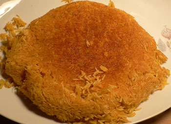

Stuck-pot rice
Tonight I made Mark BIttman’s Stuck-Pot Rice, courtesy of the Wednesday Chef. I’ve been wanting to try this recipe since I saw it in the paper months ago, but I wasn’t motivated to buy plain yogurt until I got on the Liberté train.

You’ll note that my stuck-pot rice looks exactly like Wednesday’s. Unfortunately, I didn’t like mine. It was fun and easy to make, and it looked and smelled beautiful, but it was very dry and unappealing. After serving and tasting it, I made an emergency sauce of yogurt, lime juice, and curry powder, which made it more than palatable. Still, I wondered what she did right that I did wrong, since she tells us how important it is to follow the directions exactly.
Nathan enjoyed it, so I’ll make it again using more liquid I guess. He loved the braised chicken wings that that I served alongside the rice as well. And I learned something interesting about braising today from the boss: braising does not make meat juicy. It’s cooking by extraction—the braising liquid extracts flavor and liquid from the meat in the pan, and meat loses weight during braising. The liquid serves only to tenderize the meat and, of course, it makes a tasty sauce.
Comments
i had no idea that this was a thing outside of a small homey side of korean cooking. this kind of rice is one of my favorite dishes. what we do is dry and toast it like you have shown, then reheat it very quickly with a bit of boiling water. it’s served hot in the winter and cold in the summer – goes great with soy marinated flank steak and kimchee… y’know i love my kimchee. braised chicken sounds perfect to accompany.
That sounds great with the flank steak! Does the Korean version end up really crunchy or soft?
soft. but you can change the level of softness… with the amount of water you boil it in.
Add a comment